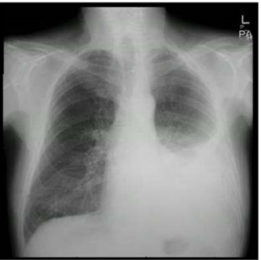

Questão 1 · Medicina Preventiva · 4000183735Disponível em: <https://blogdoaftm.com.br/charge-covid-19-nas-favelas/>. Acesso em: 24 out. 2022. A história natural da doença refere-se a uma descrição da progressão ininterrupta de uma doença em um indivíduo, desde o momento da exposição aos agentes causais até a recuperação ou a morte. Considerando a imagem apresentada e os níveis de prevenção descritos por Leavell e Clark, assinale a alternativa que indica o nível de prevenção ao qual a charge se refere.

A À prevenção secundária, pois a doença já está em curso e deve-se evitar a sua progressão.
B À prevenção primária, quando se remete à ideia de que o tratamento adequado é importante para interromper o processo mórbido e evitar futuras complicações e sequelas.
C À prevenção terciária, uma vez que a doença já está instalada e os procedimentos a serem indicados são os característicos desse nível de prevenção.
D À prevenção primária, caracterizada por incluir ações de promoção à saúde e de proteção específica, evitando a propagação da doença entre os suscetíveis.
E À prevenção quaternária, caracterizada por ações de prevenção a danos, evitando que as ações de saúde possam adoecer ainda mais as pessoas.
Questão 2 · Medicina Preventiva · 4000183734A Lei no 8.142/1990 define o Conselho de Saúde, em caráter permanente e deliberativo, como órgão colegiado composto por representantes do governo, prestadores de serviço, pro ssionais de saúde e usuários. Assinale a alternativa correspondente ao segmento que deve ser paritário em relação aos demais participantes do Conselho de Saúde.
A Profissionais de saúde
B Prestadores de saúde
C Representantes do governo
D Usuários
E Gestores
Questão 3 · Medicina Preventiva · 4000183733Maria chegou à unidade básica de saúde com sua lha de 4 anos de idade apresentando 40 ºC de febre, tosse e prostração. A enfermeira avaliou o estado da criança e classi cou-o como urgente, colocando-a imediatamente no consultório médico para atendimento. Maria cou desconfortável com a situação de “passar na frente das outras pessoas que estavam lá antes dela, pois havia até idosos na fila”. A Política Nacional de Humanização (PNH), promulgada em 2003, tem como objetivo efetivar os princípios do Sistema Único de Saúde no cotidiano das práticas de atenção e de gestão, quali cando a saúde pública no Brasil e incentivando trocas solidárias entre gestores, trabalhadores e usuários. Com base nessas informações, assinale a alternativa que indica a diretriz da PNH representada no relato descrito.
A Acolhimento
B Gestão participativa
C Ambiência
D Clínica ampliada
E Valorização do trabalhador
Questão 4 · Medicina Preventiva · 4000183732De acordo com o Decreto no 7.508/2011, as regiões de saúde serão instituídas pelo Estado, em articulação com os municípios, respeitadas as diretrizes gerais pactuadas na Comissão Intergestores Tripartite (CIT). A esse respeito, assinale a alternativa correta.
A As regiões de saúde podem ser compostas por municípios limítrofes por ato único dos municípios que irão constituí-las.
B Na constituição das regiões de saúde com municípios de fronteira com outros países, elas devem seguir somente normas e legislações brasileiras.
C As regiões de saúde serão referência para a transferência de recursos entre os entes federativos.
D As regiões de saúde seguirão a lógica do cronograma pactuado entre os municípios e o governo federal.
E Para a constituição de uma região de saúde, deve-se ter três elementos: população, limites geográficos e critérios de responsabilidade definidos.
Questão 5 · Medicina Preventiva · 4000183731Quando o Sistema Único de Saúde (SUS) não conseguir ofertar toda a demanda de assistência à saúde, poderá recorrer à iniciativa privada para a garantia de ações e de serviços à população. A participação da iniciativa privada no SUS deve ser
A implementar.
B suplementar.
C filantrópica.
D complementar.
E ampliada.
Questão 6 · Medicina Preventiva · 4000183730Instância colegiada permanente com caráter deliberativo, consultivo, paritário e composta por trabalhadores, gestores e usuários, regida por regimento próprio e que deve estar ligada às secretarias de cada esfera de governo. O conceito apresentado aplica- se à (ao)
A Comissão Intergestores.
B Conselho de Saúde.
C Conferência de Saúde.
D Conselho de Secretários Estaduais de Saúde.
E Conselho de Secretários Municipais de Saúde.
Questão 7 · Medicina Preventiva · 4000183729No que tange à organização e à direção do Sistema Único de Saúde, assinale a alternativa correta.
A Os municípios podem constituir consórcios intermunicipais para desenvolver ações e serviços que lhes competem.
B A organização regional deve ocorrer sempre em distritos, de forma a integrar e a articular recursos, técnicas e práticas voltadas para a cobertura total das ações de saúde.
C As comissões intersetoriais não são responsáveis por articular políticas e programas de interesse para a saúde.
D A criação de comissões permanentes para a integração entre os serviços de saúde e o ensino profissional e superior é facultativa.
E A vigilância epidemiológica pode ser definida como um conjunto de ações capazes de eliminar ou de prevenir riscos à saúde e de intervir nos problemas sanitários.
Questão 8 · Medicina Preventiva · 4000183728Segundo dados do Boletim Epidemiológico 135 – Boletim COE coronavírus - semana epidemiológica (SE) 41 (9/10 a 15/10/22), “a média móvel de casos registrados foi de 4.236, enquanto na SE 40 (8/10 a 14/10/2022), foi de 5.788, ou seja, houve uma redução de 47% no número de casos novos na semana atual. Quanto aos óbitos, a média móvel de óbitos registrados na SE 41 foi de 44, representando uma redução de 47% em relação à média de registros da SE 40”. BRASIL. Ministério da Saúde. Secretaria de Vigilância em Saúde. Boletim epidemiológico especial 135: doença pelo novo coronavírus (Covid-19). 2022, com adaptações. Considerando o texto apresentado, a medida que descreve o número de novos casos de determinadas doenças em um território denomina-se
A prevalência.
B autóctone.
C alóctone.
D incidência.
E frequência.
Questão 9 · Medicina Preventiva · 4000183727Para a gestão do Sistema Único de Saúde (SUS), os três entes federados têm atribuições comuns na oferta de ações e de serviços. Acerca dessas atribuições e desses serviços, assinale a alternativa correta.
A Elaboração de normas técnicas e estabelecimento de padrões de qualidade e parâmetros de custos que caracterizam a assistência à saúde.
B Identificação dos serviços estaduais e municipais de referência nacional para o estabelecimento de padrões técnicos de assistência à saúde e elaboração de normas para regular as relações entre o SUS e os serviços privados contratados de assistência à saúde.
C Acompanhamento, avaliação e divulgação dos indicadores de morbidade e de mortalidade no âmbito da unidade federada.
D Identificação dos estabelecimentos hospitalares de referência e gestão dos sistemas públicos de alta complexidade.
E Formação de consórcios administrativos intermunicipais e gestão de laboratórios públicos de saúde e hemocentros.
Questão 10 · Medicina Preventiva · 4000183726Elevação acima do esperado do número de casos de determinada doença ou evento em uma região especí ca é definida como
A pandemia.
B epidemia.
C surto.
D sazonalidade.
E endemia.
Revisar: possível letra faltando em enunciado
Questão 11 · Nef rologia · 4000183725Uma paciente de 24 anos de idade, de origem africana com diagnóstico de anemia falciforme, assintomática, durante avaliação pré-natal de rotina efetuada na 14a semana gestacional, apresenta bacteriúria assintomática > 105 UFC/mL. Acerca desse caso clínico, assinale a alternativa que indica, respectivamente, o microrganismo mais provável na urocultura e a terapêutica empírica.
A Pseudomonas aeruginosa
B Proteus mirabili
C Klebsiella pneumoniae
D Staphylococcus agalactiae
E Escherichia coli
Questão 12 · Diabetes na gestação DMG · Obstetrícia · 4000183724Quanto à hiperglicemia na gestação, assinale a alternativa correta.
A A gestante com glicemia capilar em jejum maior ou igual a 126 mg/dL pode ser diagnosticada com diabetes mellitus
B A hemoglobina glicada (HbA1C) pode ser usada para o diagnóstico da diabetes gestacional e, por esse motivo, consta entre os protocolos de rastreamento de várias sociedades.
C Tumor Trofobrástico Gestacional (TTG) 75 g poderá ser realizado imediatamente em gestantes com mais de 28 semanas, caso não tenha sido realizado na idade gestacional indicada pela Organização Mundial da Saúde, pela Sociedade Brasileira de Diabetes ou pela Federação Brasileira das Associações de Ginecologia e Obstetrícia.
D A diabetes
E Ao se tratar da diabetes
Questão 13 · Trabalho de parto prematuro TPP · Obstetrícia · 4000183723A respeito do trabalho de parto prematuro (TPP), assinale a alternativa correta.
A Para o diagnóstico de TPP é suficiente a identificação de contrações uterinas regulares, com intervalo de 5 minutos ou menos entre cada uma, depois de 22 semanas de gestação e antes de 37 semanas de gestação.
B Gestantes assintomáticas e com medida do colo uterino realizada com 24 semanas de gestação menor ou igual a 25 mm possuem maior risco de parto prematuro. Essas pacientes se beneficiam da progesterona micronizada na dose de 200 mg via vaginal, à noite.
C Ainda são controversos os benefícios do uso de sulfato de magnésio como medida de neuroproteção fetal para mulheres em trabalho de parto prematuro com idade gestacional entre 24 e 31 semanas e 6 dias de gestação.
D O uso de corticoide é indicado para pacientes entre 24 e 34 semanas de gestação, com alta probabilidade de parto prematuro dentro de 7 dias, e a droga de primeira escolha é a dexametasona 6 mg intramuscular de 12 em 12 horas por 48 horas (4 doses).
E Os antibióticos devem ser utilizados em gestantes em trabalho de parto prematuro com risco iminente de parto apenas nos casos em que houver diagnóstico de corioamnionite.
Questão 14 · Hemorragias pós parto HPP e rotura uterina · Obstetrícia · 4000183722Com relação às medidas de prevenção e ao tratamento da hemorragia pós-parto (HPP), assinale a alternativa correta.
A O uso de ocitocina endovenosa como medida terapêutica na HPP apresenta início de ação em 5 minutos e meia-vida de 15 a 60 minutos.
B O uso de ocitocina profilática após todos os partos é a medida mais eficaz na prevenção da HPP, devendo ser inserida como procedimento de rotina. O esquema mais utilizado após partos vaginais é a injeção de 20 Ui de ocitocina, em bolus, por via endovenosa.
C O clampeamento oportuno do cordão umbilical, associado à sua tração controlada, bem como a vigilância/massagem uterina após dequitação placentária podem substituir o uso universal de ocitocina profilática, pois apresentam taxas de eficácia semelhantes.
D A utilização de maleato de metilergometrina como medicação uterotônica no tratamento da HPP é contraindicada principalmente para pacientes hipertensas.
E O uso de ácido tranexâmico no tratamento da HPP fica restrito aos casos de sangramentos decorrentes de causas específicas, como coagulopatias e uso de medicações anticoagulantes, uma vez que o ácido tranexâmico é uma medicação antifibrinolítica.
Questão 15 · Tratamento · 4000183721Uma paciente de 32 anos de idade realizou ultrassonogra a transvaginal para avaliação de rotina. O exame evidenciou útero com consistência heterogênea e irregular, com imagem hipoecoica sugerindo mioma submucoso de 20 mm em parede corporal anterior, com distância de 1.0 cm da serosa do útero. Ela não tem lhos. Acerca desse caso clínico, assinale a alternativa que indica a conduta mais adequada para a confirmação diagnóstica e tratamento do mioma uterino.
A Embolização das artérias uterinas
B Miomectomia por via laparotômica
C Ressonância magnética da pelve
D Miomectomia por via laparoscópica
E Miomectomia por via histeroscópica
Questão 16 · Ginecologia · Síndrome de Rokitansky · 4000183720Uma paciente de 18 anos de idade compareceu à consulta com queixa de amenorreia primária. Ao exame físico, apresentava distribuição normal de pelos axilares e genitais, mamas e vulva de aspectos habituais para a idade, porém, ao exame ginecológico, observou-se ausência de vagina. Entre os resultados dos exames, constatou-se cariótipo 46, XX, com audição e olfato normais. Nesse caso, diagnóstico mais provável é a síndrome de
A Rokitansky-Kuster-Hauser.
B Asherman.
C Sheehan.
D Kallmann.
E Morris.
Questão 17 · Ginecologia · Vascularização pélvica · 4000183719O suprimento sanguíneo arterial do útero é derivado principalmente das artérias uterinas e dos ramos uterinos das artérias ovarianas. As artérias uterinas e as artérias ovarianas, são, respectivamente, ramos das artérias
A ilíacas internas e da aorta.
B ilíacas externas e da aorta.
C ilíaca interna e ilíaca externa.
D ilíaca comum e mesentérica inferior.
E umbilical e mesentérica inferior.
Questão 18 · Avaliação da vitalidade f etal · Obstetrícia · 4000183718A avaliação da vitalidade fetal permite identi car situações de risco para eventos adversos ou para óbito do feto, e também atua, de forma preventiva, a m de evitar o insucesso da gestação. Com relação a esse assunto, assinale a alternativa correta.
A O perfil biofísico fetal é um método de avaliação ultrassonográfico do bem-estar fetal em tempo real, por meio do qual são observados quatro parâmetros: a cardiotocografia, na ausência de contrações; os movimentos respiratórios fetais; os movimentos fetais; e o tônus fetal.
B A presença de padrão sinusoidal (oscilações regulares em formato de sino, suaves, com variabilidade entre 5 bpm e 15 bpm, em frequência de 2 a 5 por minuto e duração de 30 minutos) na cardiotocografia anteparto indica bem- estar fetal preservado, classificando o exame como categoria 1.
C A presença de desacelerações precoces (quando o nadir da desaceleração coincide com o pico da contração) na cardiotocografia anteparto indica, de forma inequívoca, a presença de hipóxia e acidose fetal, sendo indicação de resolução imediata do parto.
D Dopplerfluxometria é um método que efetua a mensuração das velocidades de fluxo em vasos da circulação materna e fetal e promove informações a respeito do fluxo uteroplacentário e da resposta circulatória fetal a eventos fisiológicos e patológicos, propiciando uma análise das alterações hemodinâmicas que caracterizam a condição fetal.
E Na dopplerfluxometria utilizada como método de avaliação fetal, o índice de pulsatividade analisa as artérias uterinas, a artéria umbilical e a artéria cerebral média.
Questão 19 · Ginecologia · Doença Inf lamatória Pélvica · 4000183717No que concerne à doença inflamatória pélvica (DIP), assinale a alternativa correta.
A Apresenta relevância por causa de suas complicações, tanto do ponto de vista de emergência, no caso da pelveperitonite ou da ruptura de abscesso tubo-ovariano, como em longo prazo, uma vez que pode provocar infertilidade, gravidez ectópica e dor pélvica crônica.
B O uso de dispositivos intrauterinos (DIU) pode representar um risco três a cinco vezes maior para o desenvolvimento da DIP, sendo a paciente portadora ou não de cervicite. Por esse motivo, o DIU é contraindicado como método contraceptivo para adolescentes.
C Quanto aos agentes etiológicos, a maioria dos casos não é polimicrobiano.
D O tratamento da DIP tem a finalidade de resolver o quadro infeccioso atual e de prevenir as possíveis complicações futuras. Deve ser iniciado após o diagnóstico de certeza e do resultado do antibiograma.
E A presença de abscesso tubo-ovariano tem sempre indicação cirúrgica, independentemente do seu maior diâmetro na avaliação de imagem de ultrassonografia ou de ressonância.
Questão 20 · Ultrassom em obstetrícia USG · Obstetrícia · 4000183716No que se refere à interrupção terapêutica da gestação de feto anencéfalo, assinale a alternativa correta.
A Um de seus fundamentos jurídicos é o entendimento de que o anencéfalo é uma vida em potencial, portanto, com proteção jurídica, conforme a ADPF 54, votada pelo Supremo Tribunal Federal (STF) em 2012.
B O mencionado procedimento depende de autorização judicial.
C Em conformidade com a Resolução do Conselho Federal de Medicina, para seu diagnóstico, é necessária uma ecografia gestacional com, no mínimo, duas fotografias do feto, uma com a face em posição sagital e a outra com a visualização do polo encefálico no corte transversal evidenciando ausência de calota craniana e de parênquima cerebral.
D A referida interrupção terapêutica independe da idade gestacional.
E De acordo com a Resolução do Conselho Federal de Medicina, para seu diagnóstico, é suficiente uma ecografia gestacional assinada por apenas um médico.
Questão 21 · Doença de Hirschsprung · Doença de Hirschsprung · 4000183715Um paciente de 10 meses de vida apresenta evacuações a cada três dias, fezes em cíbalos, endurecidas, com uso frequente de supositório de glicerina. Nascido a termo, teve eliminação de mecônio com 72 horas de vida e aleitamento materno até os 6 meses, com introdução alimentar apropriada e peso adequado para a idade. Em relação ao diagnóstico mais provável, assinale a alternativa correta.
A Trata-se de constipação funcional e não há necessidade de investigação.
B Pode ser usado óleo mineral nesta idade, já que é medicação segura, sem efeitos colaterais.
C Deve ser feita biópsia colônica para confirmação diagnóstica.
D Pode ser realizada manometria anorretal, que é o padrão-ouro para o diagnóstico.
E Indica-se o tratamento com enema fosfatado.
Questão 22 · Hiperbilirrubinemia direta neonatal · 4000183714Considere um paciente de 2 meses de vida com icterícia, aumento de bilirrubina direta > 3 mg/dL, acolia e colúria. Nesse caso, o diagnóstico provável é de
A icterícia pelo leite materno.
B anemia hemolítica.
C síndrome de Gilbert.
D atresia de vias biliares.
E deficiência de G6PD.
Questão 23 · Pediatria · Vitaminas · 4000183713Os micronutrientes são essenciais para o funcionamento do organismo. A esse respeito, assinale a alternativa correta.
A O excesso de vitamina A leva a náuseas, vômitos, borramento da visão e hipertensão craniana, com síndrome de pseudotumor cerebral.
B O escorbuto manifesta-se com hemorragias cutâneas e gengivais por defeito da formação de colágeno, e o tratamento deve ser com a reposição de vitamina B3.
C A cianocobalamina (B12) está presente em verduras e frutas, e sua deficiência acarreta alterações cutaneomucosas.
D A deficiência de selênio leva a quadro de pelagra, com dermatite, demência e diarreia.
E O beribéri é causado pela deficiência de cálcio e apresenta-se com neurite, insuficiência cardíaca congestiva, edema, anorexia, afonia e agitação.
Questão 24 · Crises álgicas · Hematologia · 4000183712Acerca da anemia falciforme, assinale a alternativa correta.
A Esplenomegalia é encontrada principalmente em crianças mais velhas e em adolescentes.
B As crises dolorosas são complicações frequentes e são consequência da vaso-oclusão por hemácias falcizadas.
C A síndrome torácica aguda é tratada com antiviral e uso de broncodilatadores.
D O diagnóstico é feito na presença de hemoglobina S e A.
E A profilaxia para bactérias encapsuladas está indicada após a primeira crise álgica.
Questão 25 · Aspectos Clínicos Quadro clínico e Diagnóstico · Pediatria · 4000183711Um paciente de 3 anos de idade apresenta febre há 1 semana e aparecimento de ssura labial. No terceiro dia do início do quadro, ele teve hiperemia conjuntival, associado a exantema e linfadenopatia cervical. No que tange a principal hipótese diagnóstica desse caso clínico, assinale a alternativa correta.
A A complicação mais frequente é vasculite de grandes vasos.
B É incomum a associação com eritema, edema ou descamação de extremidades.
C As plaquetas costumam estar abaixo de 150.000/mm³.
D O uso de imunoglobulina em altas doses reduz a formação de aneurisma das coronárias.
E Não acomete articulações ou sistema digestório.
Questão 26 · Bronquiolite · Pediatria · 4000183710No que se refere à bronquiolite viral aguda (BVA), uma das principais causas de morbidade no primeiro ano de vida, assinale a alternativa correta.
A O vírus sincicial respiratório gera resposta imunológica duradoura, não sendo esperados novos quadros de BVA por essa etiologia.
B O hemograma deve ser colhido rotineiramente, e os leucócitos são preditores de infecção e de gravidade.
C A taxa de internação é alta, com necessidade de suporte ventilatório precoce.
D A profilaxia com palivizumabe está indicada para grupos específicos, como pacientes com câncer e pneumopatias.
E As complicações respiratórias são as mais comuns, incluindo mais raramente a bronquiolite obliterante.
Questão 27 · Inf ectologia · Quimioprof ilaxia · 4000183709Um paciente de 6 meses de vida apresenta febre, vômitos e abaulamento de fontanela, com líquido cefalorraquidiano indicando proteína > 150 mg/dL, glicose de 1/3 da glicemia e leucócitos > 1.000/mm³. Quanto ao diagnóstico e ao tratamento desse paciente, assinale a alternativa correta.
A Trata-se de meningoencefalite viral e é recomendado início de aciclovir.
B Trata-se de meningite bacteriana e, por causa da idade do paciente, deve-se incluir cobertura para
C A quimioprofilaxia dos contactantes deve ser instituída se identificados meningite por
D A quimioprofilaxia dos contactantes pode ser realizada com rifampicina e, alternativamente, com ceftriaxona.
E O uso de corticoide está indicado em pacientes que não apresentaram resposta após 24 horas do início do aciclovir.
Questão 28 · Manobra do Desengasgo · 4000183708Emergências Pediátricas Parada Cardiorrespiratória PCR e Arritmias na Emergência Com relação à reanimação cardiorrespiratória (RCP) em pediatria, deve(m)-se
A realizar rápida desfibrilação elétrica em paciente com atividade elétrica sem pulso.
B manter compressões torácicas a uma frequência de 80 a 100 batimentos por minuto.
C iniciar RCP no paciente com pulso < 60 bpm e sinais de hipoperfusão, que não responderam à ventilação com pressão positiva.
D iniciar 1 ventilação a cada 6 segundos no paciente com pulso e ventilação inadequada.
E iniciar manobra de Heimlich no paciente inconsciente com obstrução de via aérea superior.
Questão 29 · Puberdade Precoce · Pediatria · 4000183707No que concerne aos distúrbios puberais, assinale a alternativa correta
A A puberdade precoce é definida quando há o aparecimento de caracteres sexuais secundários antes de 10 anos de idade na menina e de 11 anos de idade no menino.
B A telarca precoce deve ser tratada, especialmente se ocorrer em crianças pequenas, abaixo de 4 anos de idade.
C A puberdade precoce periférica decorre da ativação precoce do eixo hipotálamo-hipófise-gônada.
D Hipergonadismo é um dos mecanismos que acarreta retardo puberal.
E A adrenarca precoce manifesta-se com o aparecimento de pelos, acne e odor axilar, na ausência de outros sinais puberais.
Questão 30 · Varicela · 4000183706Um paciente de 6 anos de idade está com febre, inapetência, lesões polimór cas, centrípetas e pruriginosas por todo o corpo, além de lesões orais. O estado vacinal dele é desconhecido. Nesse caso clínico, o diagnóstico mais provável é de
A impetigo.
B rubéola.
C varicela.
D prurigo estrófulo.
E eritema infeccioso.
Revisar: possível letra faltando em enunciado
Questão 31 · Cirurgia · 4000183705No manejo do paciente que sofreu um trauma físico, utiliza-se as diretrizes preconizadas pelo Advanced Trauma Life Support (ATLS). Com base nisso, considere hipoteticamente que um paciente de 38 anos de idade chegou ao pronto- socorro com história de ter sido atropelado por um automóvel. Ao exame físico, encontrava-se visivelmente agitado e com hemorragia moderada oriunda de ferida extensa na perna direita. Quanto à prioridade no atendimento a esse paciente, é correto afirmar que se deve
A realizar radiografia do tórax e da perna direita.
B garantir uma via aérea pérvia.
C infundir líquido venoso para repor a perda sanguínea.
D controlar a hemorragia da perna direita.
E infundir antibiótico para prevenir infecção na ferida da perna direita.
Questão 32 · Nef rologia · 4000183704A hiponatremia é uma condição comum em pacientes cirúrgicos no pós-operatório. Assinale a alternativa correspondente aos dados que são utilizados para calcular o
A Peso do paciente, dosagem de sódio que se deseja alcançar, dosagem de sódio do paciente e glicemia.
B Peso da água corporal, dosagem de sódio que se deseja alcançar e dosagem de sódio do paciente.
C Peso do paciente, dosagem de sódio do paciente e estimativa de perda pela diurese.
D Peso da água corporal, dosagem de sódio do paciente e estimativa de perda pela diurese.
E Peso da água corporal, dosagem de sódio que se deseja alcançar, dosagem de sódio do paciente e glicemia.
Questão 33 · Gastroenterologia · 4000183703De acordo com o escore de Ranson para pancreatite aguda biliar, para a definição de uma pancreatite aguda grave, é necessária a presença de quantos pontos?
A 5
B 4 ou mais
C 6
D 2 ou mais
E 3 ou mais
Questão 34 · Classif icação de ChildPugh · 4000183702Para a avaliação de prognóstico em pacientes com cirrose hepática, frequentemente utiliza-se a classificação de Child- Pugh. Com relação às dosagens de bilirrubina sérica em mg/dL, para os critérios de pontuação, os valores usados são bilirrubina
A < 2, entre 2-3 e > 3.
B < 2, entre 2-4 e > 4.
C < 3, entre 3-4 e > 4.
D < 2,5, entre 2,5-3 e > 3.
E < 3, entre 3-5 e > 5.
Questão 35 · Cirurgia · 4000183701As hérnias inguinais estão entre as doenças mais prevalentes na humanidade. Segundo a classificação de NYHUS, as hérnias inguinais indiretas correspondem ao tipo
A III A.
B III B.
C V.
D III C.
E II.
Questão 36 · Classif icação de Borrmann · 4000183700A classificação de Borrmann para câncer gástrico IV equivale ao câncer
A do fundo gástrico.
B ulceroinfiltrativo.
C do antro gástrico.
D protuso.
E infiltrativo difuso.
Questão 37 · Classif icação de Forrest · 4000183699Assinale a alternativa correspondente à classificação III de Forrest para sangramento de úlcera gástrica.
A Sangramento volumoso em jato
B Sem sinais de sangramento
C Sangramento recente com fundo hemorrágico
D Sangramento ativo de pequeno volume
E Sangramento recente com coágulo visível
Questão 38 · Classif icação de Sakita · 4000183698Acerca da classificação de SAKITA para úlceras gástricas, é correto afirmar que H1 corresponde à úlcera
A com ilhas de tecido de regeneração, com convergência nítida de pregas e intensa hiperemia marginal.
B com bordas planas e nítidas, fundo com fibrina e, por vezes, restos necróticos
C com a formação de uma cicatriz vermelha com reação inflamatória adjacente residual.
D com fibrina tênue, discreta convergência de pregas e com hiperemia marginal.
E em que as bordas tornam-se bem definidas, às vezes elevadas, tomando forma mais nítida, e o fundo com fibrina espessa e clara.
Questão 39 · Classif icação de Johnson · 4000183697As úlceras gástricas são doenças importantes, que acometem a população brasileira, com uma siopatologia variada, sendo a infecção pelo localização e os níveis de acidez do estômago relacionados ao tipo I de úlcera gástrica são, respectivamente,
A corpo gástrico e níveis altos de acidez.
B pequena curvatura próximo à incisura angular e níveis altos de acidez.
C pequena curvatura próximo à incisura angular e níveis baixos ou normais de acidez.
D pré-pilórica e níveis baixos ou normais de acidez.
E pré-pilórica e níveis altos de acidez.
Questão 40 · Cirurgia · 4000183696As hérnias femorais são mais comuns em mulheres e têm uma alta incidência de estrangulamento por causa das características do canal femoral, espaço onde estão as estruturas herniadas. Assinale a alternativa que indica os limites do canal femoral
A Ligamento inguinal posteriormente, borda do músculo retoabdominal lateralmente e aponeurose do músculo oblíquo externo anteriormente.
B Ligamento inguinal lateralmente, borda do músculo retoabdominal posteriormente e aponeurose do músculo oblíquo externo anteriormente.
C Trato iliopúbico posteriormente, ligamento de Cooper anteriormente e veia femoral lateralmente.
D Trato iliopúbico anteriormente, borda do músculo retoabdominal posteriormente e veia femoral lateralmente.
E Trato iliopúbico anteriormente, ligamento de Cooper posteriormente e veia femoral lateralmente.
Questão 41 · Eletrocardiograma · 4000183695Acesso em: 10 nov. 2022. Com base nessa figura e sabendo que o paciente refere batedeira, sem outras queixas, apresenta-se hemodinamicamente estável e com Glasgow 15, é correto afirmar que o ritmo cardíaco e o tratamento são, respectivamente,

A fibrilação atrial e cardioversão elétrica.
B taquicardia supraventricular e amiodarona.
C bloqueio atrioventricular 2:1 e estudo eletrofisiológico.
D taquicardia ventricular sustentada e amiodarona.
E flutter atrial e adenosina.
Questão 42 · Medicina Preventiva · 4000183694O uso irracional ou inadequado de medicamentos representa um dos maiores problemas de saúde pública em nível mundial. Durante a pandemia de Covid-19, acredita-se que, aproximadamente, 70% dos antibióticos foram utilizados sem critérios e de forma desnecessária. Com base nisso, assinale a alternativa que indica uma das competências do Comitê Nacional para a Promoção do Uso Racional de Medicamentos (CNPURM).
A Organizar com o estoque e a farmácia as necessidades de uso de forma aleatória e rápida.
B Identificar e propor estratégias e mecanismos de articulação, monitoramento e avaliação direcionados à promoção do uso racional de medicamentos, de acordo com os princípios e as diretrizes do Sistema Único de Saúde.
C Convencer os gestores de saúde quanto ao uso de novas tecnologias em medicamentos, mesmo que comprometa, de início, a qualidade.
D Restringir marcos regulatórios e de vigilância de medicamentos e serviços farmacêuticos no âmbito do Sistema Nacional de Vigilância Sanitária.
E Propor plano de uso progressivo de medicamentos, de forma a controlar as doenças, mesmo com várias associações de amplo espectro.
Questão 43 · Dependência de Álcool · Ref orma Psiquiátrica e Psiquiatria Social · Dependência Química · 4000183693O alcoolismo pode causar grandes danos por causa do comportamento violento que provoca nos indivíduos. Constatou-se a presença de álcool no agressor, na vítima ou em ambos em até 66% dos casos de homicídio e de agressões severas, e em até 50% dos casos de estupro e de atentado ao pudor. Acerca desse assunto, assinale a alternativa que apresenta estratégias utilizadas para redução de danos nesse contexto.
A Isolamento social e familiar como método punitivo.
B Discussões sociais, expondo o dependente para que reconheça os danos causados.
C Internação compulsória até a desintoxicação.
D Não colocar a abstinência como o único objetivo a ser almejado, propondo ao usuário possibilidades para melhorar a qualidade de vida dele.
E Ofertar benzodiazepínicos até conseguir iniciar tratamento específico.
Questão 44 · Distrof inopatias · 4000183692Um menino de 5 anos de idade foi ao neurologista apresentando quadro de fraqueza muscular, di culdade para levantar, sem conseguir correr, com quedas frequentes e com certa dificuldade de aprendizado. O médico informou tratar-se de uma doença hereditária, ligada ao cromossoma X, sem cura. Nesse caso hipotético, o diagnóstico a ser informado à família é de
A esclerose lateral amiotrófica.
B distrofia muscular de Duchenne.
C necrose de cabeça do fêmur.
D transtorno do espectro do autismo.
E transtorno do
Questão 45 · Esquemas de Tratamento · 4000183691Quanto ao primeira linha.
A Levofloxacina e bismuto
B Testes fenotípicos ou genotípicos de susceptibilidade antimicrobiana
C Inibidor da bomba de prótons, doxiciclina e tetraciclina
D Inibidor da bomba de prótons isoladamente, até cessarem os sintomas
E Inibidor da bomba de prótons, amoxicilina e claritromicina
Questão 46 · Derrame Pleural · Hemotórax · Pneumologia · 4000183690Um paciente comparece ao pronto atendimento com dispneia, tosse, dor torácica pleurítica e febre baixa, após queda na rua ocorrida há uma semana, em que houve trauma torácico. Na ocasião, foram realizados raios X de tórax. Considerando a análise da imagem, assinale a alternativa que indica o tratamento para o alívio dos sintomas relatados no referido caso hipotético.

A Drenagem torácica fechada
B Furosemida
C Anti-inflamatórios não hormonais
D Repetir os raios X de tórax após duas semanas
E Início imediato de antibioticoterapia de amplo espectro
Questão 47 · Agentes etiológicos · Nef rologia · 4000183689No adulto com vida sexual ativa, a infecção urinária é comumente causada pela bactéria
A Pseudomonas aeruginosa.
B Proteus mirabilis.
C Escherichia coli.
D Klebsiella sp.
E Enterococcus faecalis.
Questão 48 · Neurologia · Síf ilis · 4000183688Um paciente com quadro de febre baixa, mal-estar, faringite, artralgia e perda ponderal foi à unidade básica de saúde, onde recebeu prescrição de analgesia para virose. Ele evoluiu com cefaleia e meningismo, tonturas e diminuição cognitiva. Foi, então, solicitada a avaliação do especialista que indicou a coleta de liquor cefalorraquidiano, o qual mostrou hiperproteinorraquia, pleocitose, hipoglicorraquia e presença de FTA-Abs/TPHA. Nesse caso hipotético, o diagnóstico e o tratamento são, respectivamente,
A dengue e paracetamol.
B neurossífilis e ceftriaxona.
C Covid e dexametasona.
D Pseudomonas aeruginosa e penicilina benzatina.
E estrongiloidíase e ivermectina.
Questão 49 · Pneumologia Intensiva · Pneumologia · 4000183687Nos últimos anos, abordou-se, com frequência, temas relativos a pacientes em ventilação mecânica. A esse respeito, assinale a alternativa que apresenta uma estratégia para inibir o estiramento alveolar no nal da inspiração, impedindo possível in amação ou colabamento alveolar e, assim, protegendo os pulmões de lesão pulmonar induzida por ventilador mecânico (LPIV).
A Volume corrente por volta de 6 mL/kg
B PEEP > 35
C Drive pressure > 30 cmH₂O
D Pressão de platô maior que 30 cmH₂O
E Manutenção de PaO₂/FiO₂ < 150
Questão 50 · Endocrinologia · 4000183686Suponha que um paciente de 65 anos de idade esteja apresentando letargia, frio, excessiva descamação na pele, fadiga, incapacidade de praticar atividades físicas, sonolência, queda de cabelos e obstipação. Exames realizados apresentaram resultados normais, mas com achado isolado de TSH > 10 mU/L (VR = 0,3 a 4,0 mUI/L). Diante disso, é correto a rmar que o quadro é compatível com o diagnóstico de Respostas: 1 12 23 34 45
A senilidade.
B hipovitaminose A.
C desnutrição proteico-calórica.
D hipotiroidismo subclínico.
E síndrome da fragilidade no idoso.